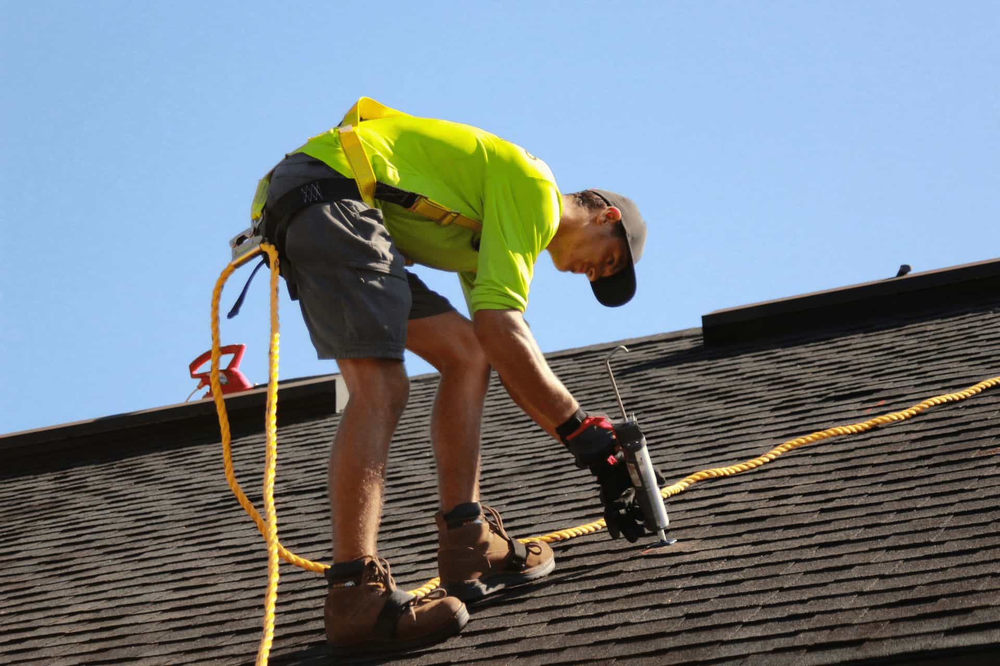

Broad visible aging
Useful when wear appears widespread rather than limited to one small issue zone.
Use this route when the roof shows broad wear, recurring issues, or clear signs that a whole-system solution may be more appropriate than another short-term fix.
NobleRoof is an informational and request-routing platform. This page is category guidance only and does not confirm final scope, diagnosis, or provider acceptance.

Replacement usually becomes the stronger route when wear is widespread, repairs keep repeating, or the roof is approaching the end of its service life.
Useful when wear appears widespread rather than limited to one small issue zone.
Useful when issue patterns seem to return instead of staying isolated.
Useful when the request is connected to larger system-level review.
Useful when approximate age itself becomes part of the request logic.
Approximate roof age, if known
Visible signs of broad wear or recurring problems
Property address and timing context
Whether recent weather is part of the situation
Useful when the roof appears to be in a later stage of its lifecycle and the request feels broader than a small correction.
Useful when more than one weather-related issue has appeared over time.
Useful when roofing is being considered as part of a larger property refresh.
Useful when the request is less reactive and more future-facing.
Useful when the user is already thinking beyond a smaller repair category.
Useful when a detailed assessment is required to understand the full scope of work needed.
No. This category is exploratory and helps describe situations where replacement may be under consideration.
Yes. Inspection may still be the better first step when the roof condition is not fully clear.
No. Final pricing, scope, and timing depend on independent provider review and project specifics.